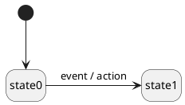

Definition
There are several kinds of actions:
- transition actions;
- entry actions;
- exit actions.
Transition action
A transition action, as its name suggests, is associated to a transition. Such an action is executed whenever the associated transition occurs.
In the following diagram, action is executed whenever the state machine transitions from state0 to state1 (because event occurs):

A state transition action
Entry action
An entry action is associated to a state. Such an action is executed whenever the state machine enters the associated state.
In the following diagram, action is executed whenever the state machine enters state2, whatever the source state (here state0 or state1):
Exit action
An exit action is associated to a state. Such an action is executed whenever the state machine exits the associated state.
In the following diagram, action is executed whenever the state machine exits state0, whatever the target state (here state1 or state2):
When to use which kind of action
Entry/exit actions, being associated to a specific state, are well suited for:
- the initialization/deinitialization of the state (e.g. allocation/deallocation of resources, start/stop of timer to implement a timeout, etc.);
- calling functions that are semantically associated with the state name (e.g. start_motor()/stop_motor() for a state named running_motor).
Transition actions are well suited for executing functions that have more to do with the specific transition it's associated to than with the source or target state.
How to define actions within Maki
There are two ways to define and associate an action:
- within the transition table, possible for transition actions;
- within the associated state, possible for internal actions (see Local Transition), entry actions and exit actions.
Within the transition table
The action is the fourth (optional) parameter of maki::transition_table::operator()(). In this context, Maki expects an instance of maki::action or maki::null.
What determines the kind of the action (between a state transition action and an internal action) is the target state (the third parameter) given to maki::transition_table::operator()():
- if the target state is maki::null, the action is an internal action;
- if the target state is a valid state, the action is a state transition action.
Note: A transition without target state is called an internal transition. No state exit or entry happens in this case.
Here is an example of two actions, with their definition and their association with a transition:
{
std::cout << "Executing some action...\n";
});
constexpr auto some_other_action =
maki::action_e([](
const some_other_event& event)
{
std::cout << "Executing some other action (some_other_event{" << event.value << "})...\n";
});
(maki::ini, state0)
(state0, state1, maki::event<some_event>, some_action )
(state0, maki::null, maki::event<some_other_event>, some_other_action )
(state0, state2, maki::event<yet_another_event>)
(state1, state2, maki::event<yet_another_event>)
(state2, state0, maki::event<yet_another_event>)
;
Within the associated state
To associate an action to a state, you have to add a callable to the state mold through a call to either:
Here is an example of a state that defines all three kinds of actions (entry, internal and exit):
(
[](const some_other_event& event)
{
std::cout << "Executing state2 entry action (some_other_event{" << event.value << "})...\n";
}
)
.entry_action_v([]
{
std::cout << "Executing state2 entry action...\n";
})
.internal_action_v<some_event>([]
{
std::cout << "Executing state2 some_event action\n";
})
.internal_action_e<some_other_event>([](const some_other_event& event)
{
std::cout << "Executing state2 some_other_event action (some_other_event{" << event.value << "})...\n";
})
.exit_action_v([]
{
std::cout << "Executing state2 exit action...\n";
})
;
As you can see, for each action you have to specify:
- the signature of the action, specified by the suffix of the function name, such as:
- _e for an action that only takes a reference to the event that triggers the action;
- _ce for an action that takes a reference to the context, as well as a reference to the event;
- _v for an action that doesn't take any argument;
- and so on (see maki::state_mold for all suffixes)...;
- the event type for which the action is invoked, specified by the given template argument.
Order matters! Whenever the state machine must execute an action, it iterates over the provided action list until it finds a match (i.e. an action of the adequate kind, specifying the adequate event type).
Example
Here is an example program for all the actions we've defined in this chapter:
#include <maki.hpp>
#include <iostream>
struct context{};
struct some_event{};
struct some_other_event
{
int value = 0;
};
struct yet_another_event{};
(
[](const some_other_event& event)
{
std::cout << "Executing state2 entry action (some_other_event{" << event.value << "})...\n";
}
)
.entry_action_v([]
{
std::cout << "Executing state2 entry action...\n";
})
.internal_action_v<some_event>([]
{
std::cout << "Executing state2 some_event action\n";
})
.internal_action_e<some_other_event>([](const some_other_event& event)
{
std::cout << "Executing state2 some_other_event action (some_other_event{" << event.value << "})...\n";
})
.exit_action_v([]
{
std::cout << "Executing state2 exit action...\n";
})
;
{
std::cout << "Executing some action...\n";
});
constexpr auto some_other_action =
maki::action_e([](
const some_other_event& event)
{
std::cout << "Executing some other action (some_other_event{" << event.value << "})...\n";
});
(maki::ini, state0)
(state0, state1, maki::event<some_event>, some_action )
(state0, maki::null, maki::event<some_other_event>, some_other_action )
(state0, state2, maki::event<yet_another_event>)
(state1, state2, maki::event<yet_another_event>)
(state2, state0, maki::event<yet_another_event>)
;
.context_a<context>()
;
int main()
{
auto machine = machine_t{};
machine.process_event(some_event{});
machine.process_event(some_event{});
machine.process_event(yet_another_event{});
machine.process_event(some_other_event{1337});
machine.process_event(yet_another_event{});
return 0;
}
The output of this program is the following:
Executing some other action (some_other_event{42})...
Executing some action...
Executing state2 entry action...
Executing state2 some_other_event action (some_other_event{1337})...
Executing state2 exit action...
 1.14.0
1.14.0